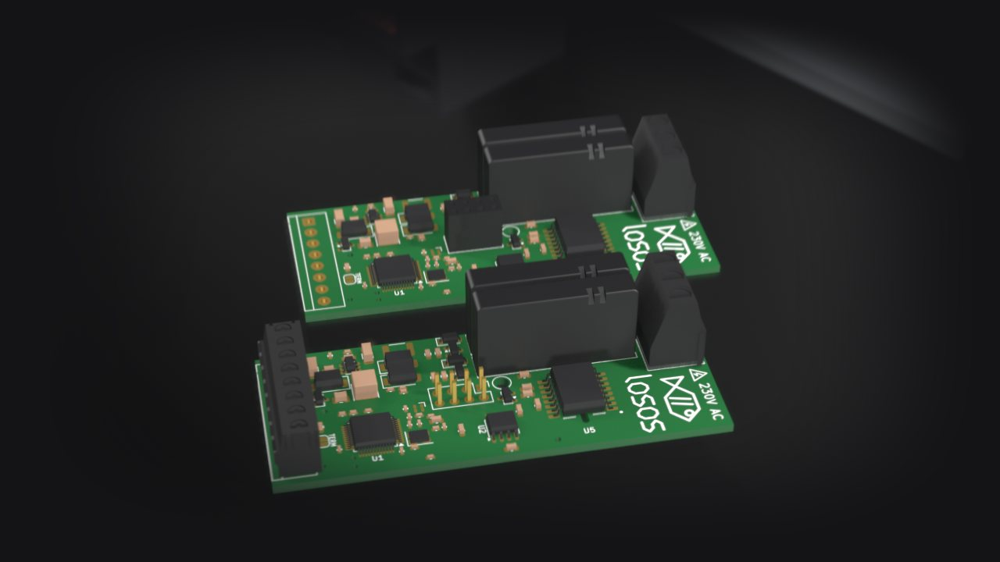
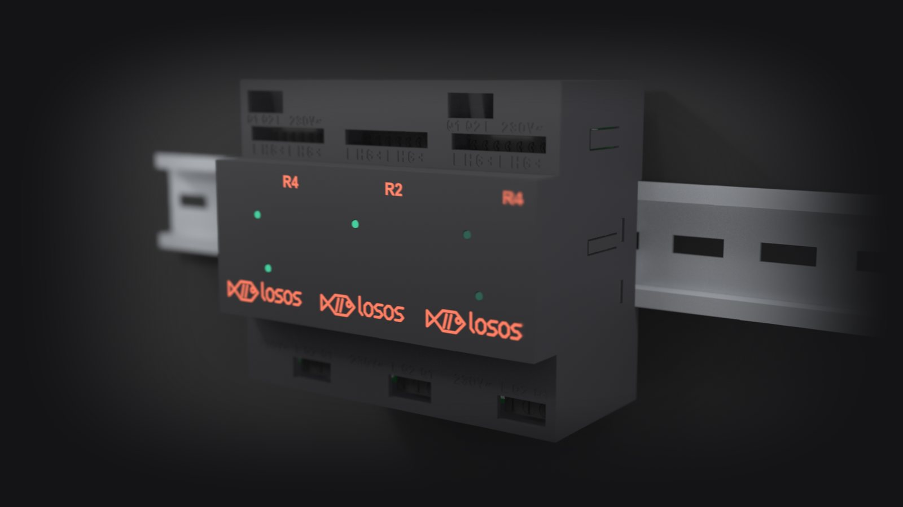

Losos R2
- Segmenty
- 1
- Wyjścia przekaźnikowe
- 2
- Obciążalność wyjścia
- 6 A / 250 V AC
- Suma Q1 + Q2
- maks. 6 A
- Faza L
- wspólna
- Urządzenia Tree
- 1
- Szerokość
- 2M · 35,6 mm
Wkrótce w sprzedaży
Losos R2 i R4 to wyjścia przekaźnikowe 6 A w obudowie szerokiej na dwa moduły. Wpinasz moduł na szynę, łączysz przewodem z magistralą Tree, a w Loxone Config pojawia się jak każde urządzenie Tree.

R4 to dwa segmenty jeden nad drugim, połączone złączem 2 × 4. R2 ma jeden segment w tej samej obudowie. Każdy segment ma własny mikrokontroler, przekaźniki i numer seryjny.
Dla Miniservera każdy segment jest osobnym urządzeniem Tree z dwoma wyjściami, więc R4 widzisz w konfiguracji jako dwa urządzenia.
